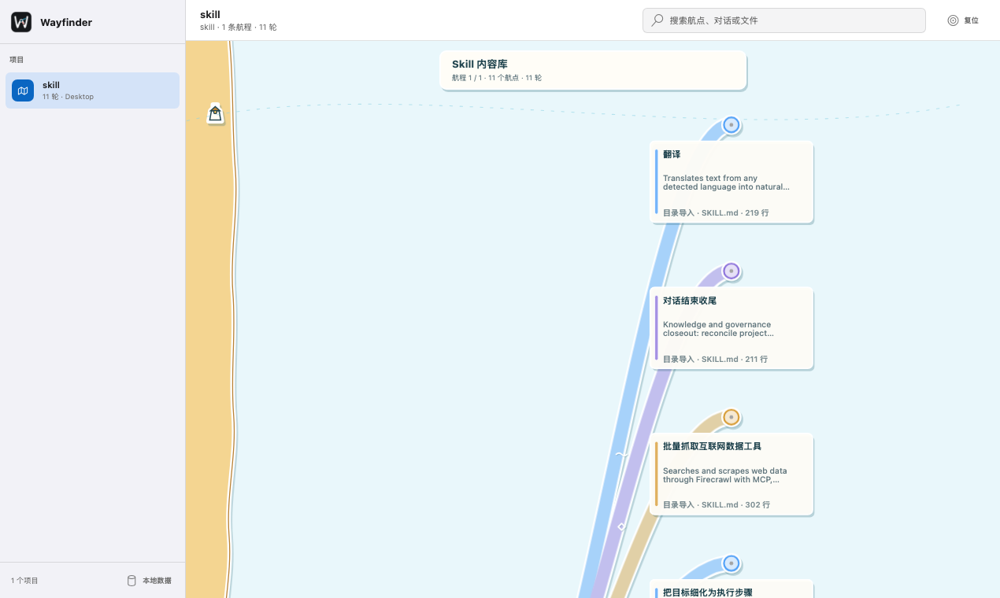

明确目标统一整理跨工具协作
保留分叉方案与证据不再丢失
标记失败回滚与冲突保持可见
DESKTOP APP · MACOS + WINDOWS
Wayfinder
把 Codex 与 Claude Code 的尝试、分叉和真实文件变更，留在一张本地航海图里。
Apple Silicon · Intel · Windows x64
本地记录
真实 Diff
跨工具归并
WORKFLOW
工作时不打扰，结束后看清路径。
继续使用熟悉的 AI 工具。Wayfinder 在后台把分散记录归入同一个项目。
-
01
启动桌面应用
Wayfinder 在后台等待新的本地协作记录。
-
02
继续正常工作
Codex 与 Claude Code 的本地会话变化会在后台自动归档。
-
03
查看一张航海图
跨工具尝试汇入同一项目，并保留各自来源和分叉。

LOCAL BY DESIGN
真实协作记录，只在本机重组。
Wayfinder 直接读取本地会话，把来源、分支、文件变更和验证结果还原到对应航点；完整历史保存在 ~/.wayfinder。
无需账号
无云端分析
本地增量采集
查看数据边界 →
EVIDENCE, NOT VERDICTS
结果之外，也保留为什么。
每条路线都能回到原始会话、真实文件变更与验证结果。
正在推进
同一目标下，Codex 与 Claude Code 的尝试可以汇入一条航程。
验证失败
失败路线不会消失，测试、回滚与否决仍可追溯。
证据冲突
来源意见不一致时，保留各自证据，不替你编造结论。
EARLY ACCESS
下一次选择，不必从零开始。
在 macOS 与 Windows 上，把已经走过的路径、证据和结果留给下一次决策。